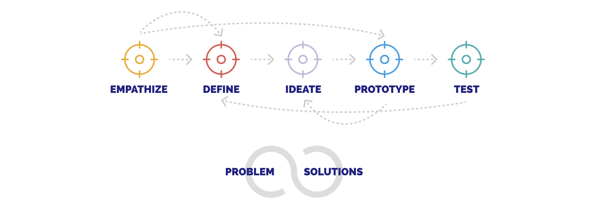

My Design Philosophy
My design philosophy is to take peoples needs in the first place. I ma a firm believer of thorough research, wireframing, prototyping, testing, and iterating to get the best user experiences possible.

Design thinking is a non-linear, iterative process that teams use to understand users, challenge assumptions, redefine problems and create innovative solutions to prototype and test. Involving five phases—Empathize, Define, Ideate, Prototype and Test—it is most useful to tackle problems that are ill-defined or unknown.
My Considerations
My Approaches & Flows
What I'm Doing At Work?
Communicate closely with users and understand business requirements and goals.
Create user journey map, task flow, wire-frame, prototype, testing and iteration.
Work closely with external vendors and internal IT team in delivering IT solutions.
Assist in project management, UAT and product launch.